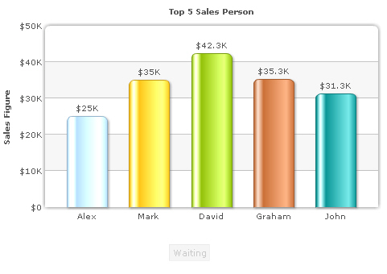
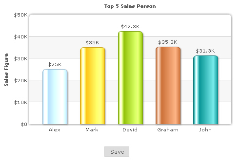
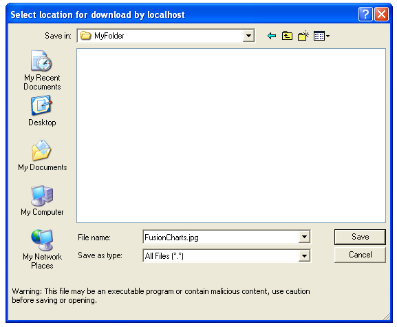
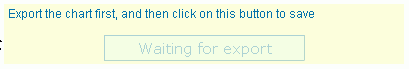
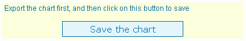

Exporting Charts as PDF or Images > Client-side export > Simple Example |
Here, we'll cover examples for setting up client-side exporting of charts. We'll first start with the simplest example and then move ahead by configuring various parameters. Before you start, you'll need to follow these steps:
With that done, our next few steps are:
Let's see how to implement each of them in details. |
| Creating instance of Export Component in your web page |
The instance of the export component can be created in your web page easily using our FusionChartsExportComponent JavaScript class. So, you first need to include the JavaScript class in your page as under. Make sure to include this page after FusionCharts.js, as this class references some of the objects defined in FusionCharts.js. This order of inclusion is important. |
| <head> <script language="JavaScript" src="../../FusionCharts/FusionCharts.js"></script> <script language="JavaScript" src="../../FusionCharts/FusionChartsExportComponent.js"></script> </head> |
| Now, using this class, you need to create an instance of this component in your page. For that, you first define an empty DIV and name it, as shown under: |
| <!-- We also create a DIV to contain the FusionCharts client-side exporter component --> <div id="fcexpDiv" align="center">FusionCharts Export Handler Component</div> |
As you can see above, the DIV has been named as fcexpDiv. Note that you can place this DIV anywhere in your page - it's not necessary to place it beside the chart. However, since the UI of this export component shows a button for initiating export, it's better to place it somewhere near the chart so that your users can recognize it. Finally, you create an instance of the export component in your page using the following JavaScript code: |
<script type="text/javascript"> //Render the exporter SWF in our DIV fcexpDiv |
Here, we first create an instance of FusionChartsExportObject, which is the JavaScript class representation of FusionCharts Export Component. To this, we specify the DOM-Id of this export component instance - fcExporter1 in this case. We also specify the location of the component SWF file as second parameter. Finally, we call the Render method of the class with our DIV id as parameter. This generates an instance of the exporter component in the specified DIV at run-time. While there are more parameters that you can provide in this constructor to customize the cosmetics and functional behavior of export component, we'll come to them later. The final code of the page looks as under: |
<html> <body bgcolor="#ffffff"> <!-- We also create a DIV to contain the FusionCharts client-side exporter component --> //Render the exporter SWF in our DIV fcexpDiv </body> |
| This completes the code needed in your HTML. Now, we just need to configure our chart XML data to use this export component. |
| Configuring XML for client-side export |
In the XML, you need to do three things:
The following XML snippet shows how to attain these: |
<chart yAxisName='Sales Figure' caption='Top 5 Sales Person' numberPrefix='$' useRoundEdges='1' bgColor='FFFFFF,FFFFFF' showBorder='0' exportEnabled='1' exportAtClient='1' exportHandler='fcExporter1'> |
| When you now fire up your HTML page, you'll see a screen as under. |
|  |
The screen consists of a chart and a small Waiting button below it. This button is the UI of FusionCharts export component. By default, it's enabled as the chart hasn't yet exported its data to export component. The export component can have UI in two modes - Compact or Full. What you see here is the compact mode with just the button on. We'll cover customization of this mode and full mode in the coming sections. To start exporting, right click on the chart and select "Save as JPEG". You'll see the chart entering capture phase. Once capture phase is finished, the chart passes this data to export component, which in turn processes it and makes it available for download. In this state, the title of button changes to "Save" and it gets enabled, as shown below. |
|  |
| When you click this button now, the browser shows a "Save as" dialog box, which allows you to save the exported chart output on your hard drive. |
|  |
As you can see above, the chart downloads as "FusionCharts.jpg". If you wish to change the name of file, you can specify it in your XML as: <chart ... exportFileName='MyFileName' ...> Note that you do not have to provide the extension here, as the extension depends on the format that was selected on chart during export. Now, if you're wondering why the export component needs to be a separate SWF file and why does it need to have a UI, let's understand the same. |
| FusionCharts Export Component - Why a separate UI? |
FusionCharts is made in Flash 8 (AS2) which doesn't support byte-streams and file downloads. However, Flash 10 (AS3) does support the same. So, to get the best of both worlds, the Export Component has been coded in Flash 10 (AS3) to be able to handle image/PDF building (using byte streams) and to allow download of the same. The bridge between FusionCharts charts and the Export Component is JavaScript. So, we always ask you to set registerWithJS of chart as 1, and to run the files from a server (either localhost, or a remote server), as Flash Player, by default, blocks JavaScript communication when running from local filesystem. Now if you're wondering why we cannot start automatic download of image/PDF from export component, rather than having to click a button, let us explain. In Flash Player, to allow download of a file, the end user has to necessarily interact with the Flash movie that initiates download. This has been done to avoid "evil" movies on web from doing any sort of harm. As such, the export component provides a button to click on, which initiates the download. As we earlier mentioned, the export component has two modes - Compact and Full Mode. The full mode has a much enhanced UI, wherein you can select format for each chart, or download all charts as a single file. We'll cover them later in Batch Export section. Before that, let's quickly glance through customization options for the compact mode. |
| Customizing the Export Component UI |
| The export component offers extensive UI customization options. Here, we'll see some of the basic configuration options. The entire list can be found in the section Component UI Customization. Consider the code below: |
| <!-- We also create a DIV to contain the FusionCharts client-side exporter component --> <div id="fcexpDiv" align="center">FusionCharts Export Handler Component</div> <script type="text/javascript"> //Render the export component in this //Note: fcExporter1 is the DOM ID of the DIV and should be specified as value of exportHandler //attribute of chart XML. var myExportComponent = new FusionChartsExportObject("fcExporter1", "../../FusionCharts/FCExporter.swf"); //Customize the component properties //Width and height myExportComponent.componentAttributes.width = '400'; myExportComponent.componentAttributes.height = '60'; //Background color myExportComponent.componentAttributes.bgColor = 'ffffdd'; //Border properties myExportComponent.componentAttributes.borderThickness = '2'; myExportComponent.componentAttributes.borderColor = '0372AB'; //Font properties myExportComponent.componentAttributes.fontFace = 'Arial'; myExportComponent.componentAttributes.fontColor = '0372AB'; myExportComponent.componentAttributes.fontSize = '12'; //Message - caption of export component myExportComponent.componentAttributes.showMessage = '1'; myExportComponent.componentAttributes.message = 'Export the chart first, and then click on this button to save'; //Button visual configuration myExportComponent.componentAttributes.btnWidth = '200'; myExportComponent.componentAttributes.btnHeight= '25'; myExportComponent.componentAttributes.btnColor = 'E1f5ff'; myExportComponent.componentAttributes.btnBorderColor = '0372AB'; //Button font properties myExportComponent.componentAttributes.btnFontFace = 'Verdana'; myExportComponent.componentAttributes.btnFontColor = '0372AB'; myExportComponent.componentAttributes.btnFontSize = '15'; //Title of button myExportComponent.componentAttributes.btnsavetitle = 'Save the chart' myExportComponent.componentAttributes.btndisabledtitle = 'Waiting for export'; //Render the exporter SWF in our DIV fcexpDiv myExportComponent.Render("fcexpDiv"); </script> |
As you can see above, we've specified various parameters for export component. This is done in the following syntax: Component_Instance.componentAttributes.Parameter_name = 'Value'; We've changed background colors, button colors, font properties, added a caption to UI and changed the title of button (both disabled stated and active state). When you now see your page, you'll get something as under. |
|  |
| In disabled mode (when export has not been initiated) |
|  |
In active mode (post export). The full mode has more complex UI and allows lot more configuration options. Please see the page Component UI Customization to get the complete list. Before that, let's quickly see what to do when you've multiple charts on the page. |